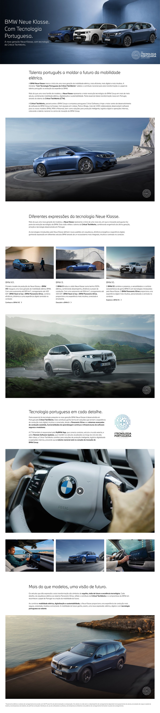
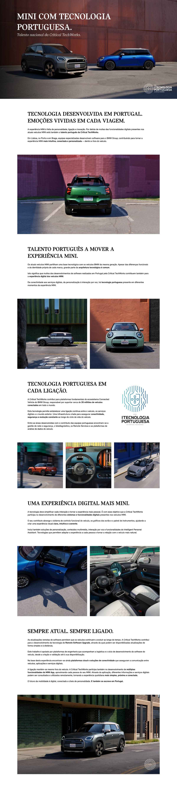
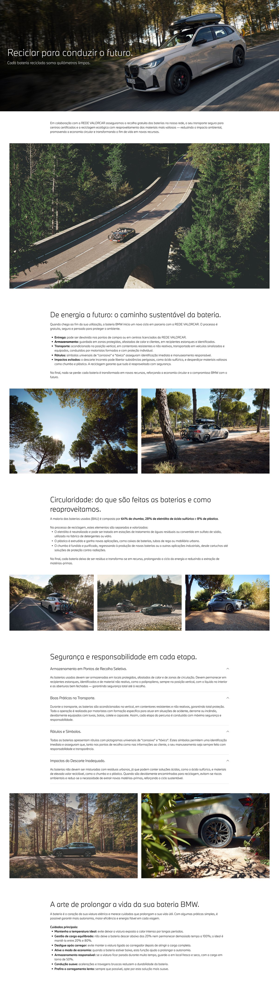
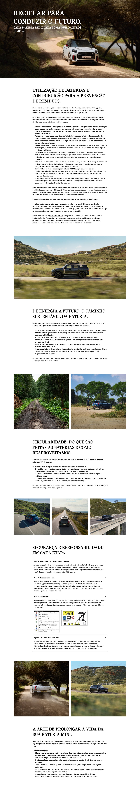

Translate the brief
Each mockup starts from the campaign goal, audience and the content that needs to lead the experience.
Landing page mockups
Landing-page concepts for BMW and MINI, shaped for future web experiences.
A confident digital experience for the next chapter of mobility.
EXPLORE MODELBMW and MINI need landing pages for a wide range of campaign and editorial themes. For each brief, I propose the strongest digital direction—shaping the layout and information hierarchy, selecting imagery and, when useful, refining the copy to create a clear experience ready for implementation.
A flexible set of visual concepts to guide website production, balancing product-led content, campaign messaging and modular layouts that can evolve with each brief.
Design approach
Each mockup starts from the campaign goal, audience and the content that needs to lead the experience.
Product information, imagery and calls to action are arranged to make the next step immediately clear.
The outcome is a clear visual blueprint, ready to be developed into the live brand website.
Final design



